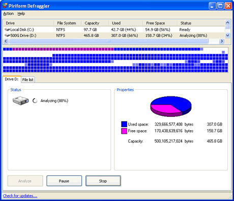
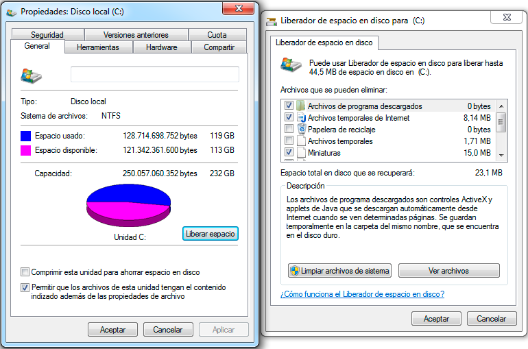

¿Qué es el manteniento de software?
El mantenimiento de software es el proceso de control, mejora y optimización del software ya desarrollado e instalado, que también incluye depuración de errores y defectos que puedan haberse filtrado de la fase de pruebas de control y beta test. Esta fase es la última (antes de iterar, según el modelo empleado) que se aplica al ciclo de vida del desarrollo de software. La fase de mantenimiento es la que viene después de que el software está operativo y en producción.
De un buen diseño y documentación del desarrollo dependerá cómo será la fase de mantenimiento, tanto en costo temporal como monetario. Modificaciones realizadas a un software que fue elaborado con una documentación indebida o pobre y mal diseño puede llegar a ser tanto o más costosa que desarrollar el software desde el inicio. Por ello, es de fundamental importancia respetar debidamente todas las tareas de las fases del desarrollo y mantener adecuada y completa la documentación.
El período de la fase de mantenimiento es normalmente el mayor en todo el ciclo de vida.10 Esta fase involucra también actualizaciones y evoluciones del software; no necesariamente implica que el sistema tuvo errores. Uno o más cambios en el software, por ejemplo de adaptación o evolutivos, puede llevar incluso a rever y adaptar desde parte de las primeras fases del desarrollo inicial, alterando todas las demás; dependiendo de cuán profundos sean los cambios. El modelo cascada común es particularmente costoso en mantenimiento, ya que su rigidez implica que cualquier cambio provoca regreso a fase inicial y fuertes alteraciones en las demás fases del ciclo de vida.
Durante el período de mantenimiento, es común que surjan nuevas revisiones y versiones del producto; que lo liberan más depurado, con mayor y mejor funcionalidad, mejor rendimiento, etc. Varias son las facetas que pueden ser alteradas para provocar cambios deseables, evolutivos, adaptaciones o ampliaciones y mejoras.
Básicamente se tienen los siguientes tipos de cambios:
Perfectivos: Aquellos que llevan a una mejora de la calidad interna del software en cualquier aspecto: Reestructuración del código, definición más clara del sistema y su documentación; optimización del rendimiento y eficiencia.
Evolutivos: Agregados, modificaciones, incluso eliminaciones, necesarias en el software para cubrir su expansión o cambio, según las necesidades del usuario.
Adaptivos: Modificaciones que afectan a los entornos en los que el sistema opera, tales como: Cambios de configuración del hardware (por actualización o mejora de componentes electrónicos), cambios en el software de base, en gestores de base de datos, en comunicaciones, etc.
Correctivos: Alteraciones necesarias para corregir errores de cualquier tipo en el producto software desarrollado.
mantenimiento preventivo de el software
El mantenimiento preventivo de software es el proceso por el cual se mejora y optimiza el software que se ha instalado, este mantenimiento se realiza para la prevención de posibles problemas que puedan llegar a surgir a medida que se utiliza el computador.
La principal razón por la que se realiza este mantenimiento, en estos días es el análisis en busca de virus, ya que estos; los “Virus” son programas nocivos para el computador, ya que causan una inestabilidad en el sistema, bajas en el rendimiento del computador, perdida de productividad, cortes en los sistemas y probables errores en el mismo, tales que no se pueden corregir de manera simple, sino mediante de una formateada. Para realizar un mantenimiento óptimo al software existen pasos para realizar este eficientemente y tener una mayor cobertura en el mantenimiento. Estos pasos son:
La revisión de instalación por SETUP.
Desfragmentación de disco duro.
La eliminación de archivos TMP.
Liberación de espacio en el disco duro.
Ejecución del antivirus.
Realizar una copia de seguridad.
Limpiar la papelera de reciclaje.
La revisión de instalación por SETUP:
Consiste en una revisión que se realiza ingresando directamente al menú que se encuentra en la setup detectando las unidades conectadas ala computadora. Mediante este se puede detectar alguna falla en conectores.
La desfragmentacion de disco duro:
la desfragmentacion es el proceso en el cual se acomodan los archivos de un disco, este se realiza cuando el disco se fragmenta, esto sucede cuando el sistema ha escrito diferentes versiones de los archivos, esto es, cuando un archivo después de ser modificado no ocupa direcciones de memoria contiguas en el disco duro.

La eliminación de archivos TMP :
Este proceso consiste en la eliminación de los archivos generados por las aplicaciones instaladas en la computadora y que ya no se utilizan.
Liberación de espacio en el disco duro:
El liberador de espacio busca en la unidad y enumera los archivos temporales, archivos de cache de Internet y archivos de programa innecesarios que puede eliminar de forma segura.

Ejecución de Antivirus:
Este se utiliza para realizar una analisis del sistema en busca de algun virus. Aunque hoy en dia, la eliminación de un virus se convierte en una tarea titanica ya que estos han ido evolucionando hasta ser casi indetectables.
Papelera de reciclaje:
La papelera de reciclaje no es más que una carpeta más, creada por Windows para almacenar los archivos que el usuario desea eliminar del computador, solo que el usuario en ciertas veces cambia de parecer con respecto a borrar dicha información, entonces ahí esta otra función de la papelera de reciclaje. Es recomendable mantenerla limpia para evitar una acumulacion de archivos que no se esten utilizando.
mantenimiento correctivo de software
Mantenimiento correctivo de software, como la palabra lo indica, es corregir un problema que tiene un software, ya sea de programas o del sistema operativo
el mantenimiento correctivo sirve para corregir cualquier error, mas que nada a los actuales virus. Existen varias formas de solucionar los problemas de software ocurridos en el equipo y aquí estan algunas de ellas:
Las actualizaciones que Windows hace para disminuir las vulnerabilidades.
Instalación de software antivirus para corregir daños que hayas sufrido con algún virus.
También implica, buscar información inútil, programas residentes, y demás software que no necesitas o que funciona incorrectamente.
El mantenimiento y lo necesario para realizarlo depende íntegramente del software que deseas habilitar. Depende si es de sistema operativo, y si lo es, depende si es Windows, MacOs, Unix.
Si es software de base de datos, también depende cuál base de datos. Incluso si se trata de un juego o el mismo Internet Explorer, al que es necesario borrar registros viejos de páginas viejas, etc.
Otra opción de mantenimiento correctivo y puede ser la más eficiente de todas el formateo del disco duro y la instalación de una copia de Windows nueva, esto se hace cuando el problema que pudiera tener el sistema es muy grande y que no se puede resolver con software de prevención.
Como conclusión tenemos que el mantenimiento correctivo de software es muy utilizado hoy en día, por que cada vez mas aumenta la cantidad de virus y cada vez son mas peligrosos; pero con la tecnología van saliendo mas programas utiles para poder realizar este mantenimiento tan importante.